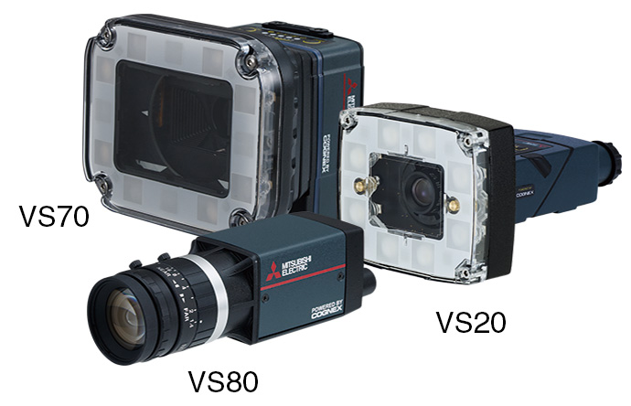
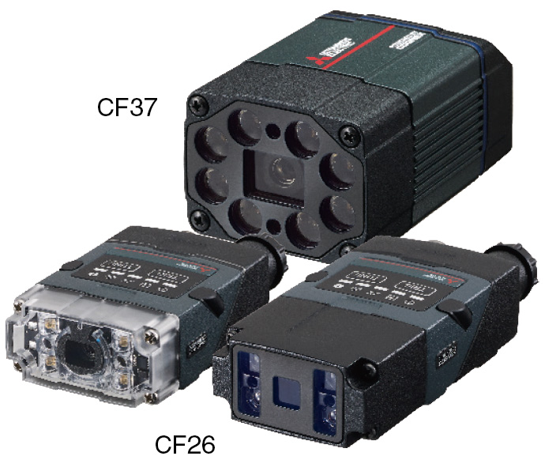

Network-related products |
Programmable Controllers MELSEC
CC-Link IE Field Basic Line Up

FA sensor MELSENSOR
CC-Link IE Field Network Basic compatible FA sensor MELSENSOR
Vision sensor VS80/VS70/VS20
- Connectable to the programmable controller without a network interface module via CC-Link IE Field Network Basic interface function
- Measurement data/inspection result output can be acquired via network. Recognition parameters of vision sensors can be also changed

| Item | VS80 | VS70 | VS20 |
|---|---|---|---|
| Imagery | Monochrome/color | Monochrome/color | Monochrome/color |
| Lighting/filter | - | Integrated | Integrated |
| Protective structure | IP40 | IP67 | IP65 |
| Autofocus | - | ● | - |
| PoE | ● | - | - |
| Presence/absence | ● | ● | ● |
| Location*1 | ● | ● | - |
| OCR/OCV*2 | ● | ● | - |
| Code reading | ● | ● | - |
| Measurement | ● | ● | - |
| Geometry | ● | ● | ●*3 |
- *1.Function to output position information of the detected work.
- *2.Alphabet and numeral reading
- *3.Excluding some models
Code reader CF26/CF37
- Auto-tuning function enables optimum setup automatically according to the environment, contributing to setup time reduction
- Powerful algorithm can decode even challenging codes and realize highest read rates, improving yield rate
- Setting/control of the code reader and retrieving data read from codes can be done via network. Read setup function enables set-up change to different symbol easily through network

| Item | CF26-SR | CF26-LR | CF37-SR | CF37-LR |
|---|---|---|---|---|
| Supported codes | ||||
| 1-D code | Code 128, Code 25, Code 93, Code 39, PharmaCode, Codabar, Interleaved 2 of 5, UPC/EAN/JAN, MSI |
Code 128, Code 25, Code 93, Code 39, Codabar, Interleaved 2 of 5, UPC/EAN, MSI |
||
| 2-D code | Data Matrix (ECC 0, 50, 80, 100, 140, 200), QR Code, Micro QR Code, MaxiCode, Aztec Code, VeriCode*4 |
Data Matrix (ECC 0, 50, 80, 100, 140, 200), QR Code, Micro QR Code, MaxiCode, Aztec Code |
||
| Stacked code | PDF 417, EAN.UCC Composite, Micro PDF 417, DataBar | PDF 417, Micro PDF 417 | ||
| Optical characteristic | ||||
| Image sensor | 1/3 inch CMOS, 4.8 mm × 3.6 mm (W × H), 3.75 µm sq.pixels, global shutter |
1/1.8 inch CMOS, 7.2 mm × 5.4 mm (W × H), 3.45 µm sq.pixels |
||
| Lens | S-mount/6.2 mm F: 5, liquid lens |
S-mount/16 mm F: 7, liquid lens |
S-mount/10.3 mm F: 5, liquid lens |
C-mount/24 mm F: 10, liquid lens |
| Image resolution (pixels) | 1280 × 960 | 2048 × 1536 | ||
| Processing speed | ||||
| Maximum image acquisition speed*5 (frame/s) | 45 | 55 | ||
| Maximum decode rate (code/s) | 45 | |||
- *4.A license needs to be purchased from Veritec Iconix Ventures Inc.
- *5.Maximum frame rate at minimum exposure